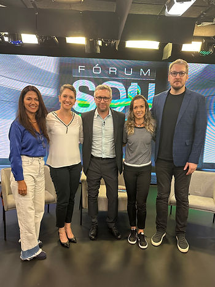

No dia 28 de novembro de 2023, a ABRAPESP esteve representada no II Fórum Sou do Esporte/Band Sports que teve a temática “Saúde Mental e Pós Carreira no Esporte”.
O programa faz parte de uma sequência de três bate papos que antecedem o 8° Prêmio Sou do Esporte/Band Sports. Nessa edição o prêmio irá homenagear Joaquim Cruz, único ouro olímpico brasileiro de provas de velocidade do atletismo, medalha conquistada nos Jogos de Los Angeles 1984.
Nossa presidente eleita para o biênio 2024-2025, Marina Gusson, esteve no programa juntamente André Heller e Adriana Aparecida, figuras de destaque do esporte brasileiro, e Adriana Rezende que trouxe sua experiência com o projeto esportivo do SESI-RJ. E o bate papo foi orquestrado pela dupla Maurício Barros da Band Sports e Fabiana Bentes, fundadora da Sou do Esporte.
De forma descontraída e responsável, o programa abordou aspectos referentes a saúde mental do atleta e o contexto do alto rendimento; a importância da família e da rede de apoio para a saúde mental; a ilustração de como Adriana Aparecida lidou e teve apoio para sair da depressão; a maior visibilidade nas redes sociais e a demanda por manejar toda essa exposição; o desafio e a importância da formação continuada do atleta durante a carreira esportiva; a responsabilidade das instituições esportivas e do governo em relação à transição de carreira dos atletas, entre outros temas.
Parabenizamos a iniciativa do Sou do Esporte juntamente com a Band Sports de trazer destaque ao tema que é tão importante e impactante na vida de nossos atletas.
Ficou curioso? Confira o programa na íntegra no link abaixo: